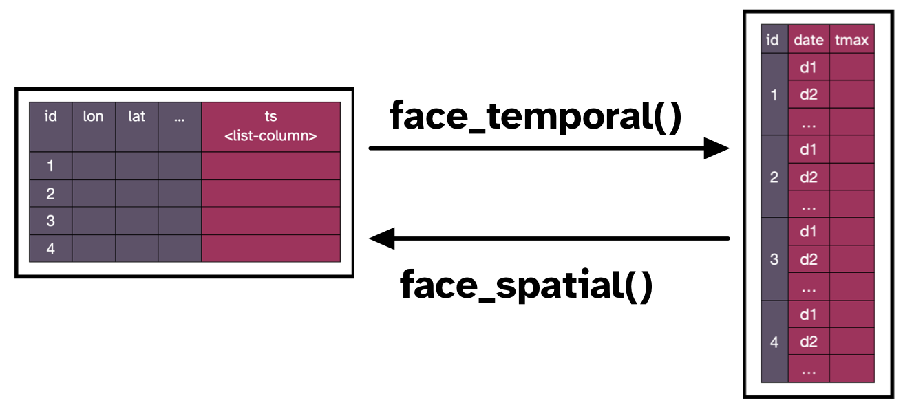
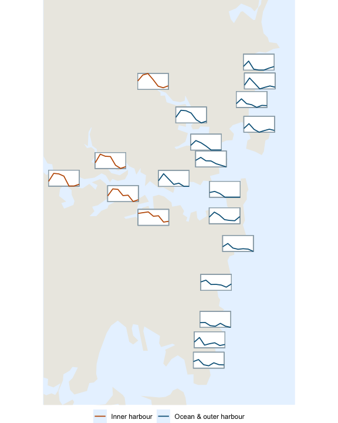

The term spatio-temporal data can incorporate various spatial and temporal characteristics and different data may require different data structures for wrangling and analysis. The spatio-temporal data that cubble addresses are those collected at unique fixed locations, allowing for irregularity in the temporal dimension, such as the weather station data.
Beyond data wrangling, cubble makes glyph maps native to ggplot2: geom_glyph() draws each location’s time series as a small plot at that location, so spatial and temporal patterns can be seen in a single plot.
Installation
You can install the released version of cubble from CRAN with:
install.packages("cubble")And the development version from GitHub with:
# install.packages("remotes")
remotes::install_github("huizezhang-sherry/cubble")How cubble organises spatio-temporal data
Cubble organises spatio-temporal data in two structures: In a nested cubble (spatial cubble), spatial variables are organised as columns and temporal variables are nested within a specialised ts column:
#> # cubble: key: id [3], index: date, nested form
#> # spatial: [144.83, -37.98, 145.1, -37.67], Missing CRS!
#> # temporal: date [date], prcp [dbl], tmax [dbl], tmin [dbl]
#> id long lat elev name wmo_id ts
#> <chr> <dbl> <dbl> <dbl> <chr> <dbl> <list>
#> 1 ASN00086038 145. -37.7 78.4 essendon airport 95866 <tibble [10 × 4]>
#> 2 ASN00086077 145. -38.0 12.1 moorabbin airport 94870 <tibble [10 × 4]>
#> 3 ASN00086282 145. -37.7 113. melbourne airport 94866 <tibble [10 × 4]>In a long cubble (temporal cubble), the temporal variables are expanded into the long form, while the spatial variables are stored as a data attribute:
#> # cubble: key: id [3], index: date, long form
#> # temporal: 2020-01-01 -- 2020-01-10 [1D], no gaps
#> # spatial: long [dbl], lat [dbl], elev [dbl], name [chr], wmo_id [dbl]
#> id date prcp tmax tmin
#> <chr> <date> <dbl> <dbl> <dbl>
#> 1 ASN00086038 2020-01-01 0 26.8 11
#> 2 ASN00086038 2020-01-02 0 26.3 12.2
#> 3 ASN00086038 2020-01-03 0 34.5 12.7
#> 4 ASN00086038 2020-01-04 0 29.3 18.8
#> 5 ASN00086038 2020-01-05 18 16.1 12.5
#> 6 ASN00086038 2020-01-06 104 17.5 11.1
#> 7 ASN00086038 2020-01-07 14 20.7 12.1
#> 8 ASN00086038 2020-01-08 0 26.4 16.4
#> 9 ASN00086038 2020-01-09 0 33.1 17.4
#> 10 ASN00086038 2020-01-10 0 34 19.6
#> # ℹ 20 more rowsThe two forms can be pivoted back and forth with the pair of verb: face_spatial() and face_temporal().

Glyph maps
A glyph map draws each location’s time series as a small plot, a glyph, at that location. cubble provides geom_glyph(), with geom_glyph_box() and geom_glyph_line() for reference boxes and lines, as ggplot2 layers. They take four aesthetics: x_major and y_major for the location, and x_minor and y_minor for the time series inside each glyph. Below, each glyph shows the proportion of water samples above the bacteria guideline in the 0–6 days after heavy rain at Sydney swim sites: ocean beaches clear within two days, while inner harbour sites stay polluted for longer.
library(ggplot2)
beach <- read.csv(system.file("extdata/sydney-beach.csv", package = "cubble"))
sydney <- sf::st_read(system.file("extdata/sydney-land.geojson", package = "cubble"),
quiet = TRUE)
ggplot(beach, aes(x_major = long, y_major = lat,
x_minor = days_after_rain, y_minor = unsafe,
colour = water, group = swim_site)) +
geom_sf(data = sydney, fill = "#ECEAE4", colour = NA, inherit.aes = FALSE) +
geom_glyph_box(width = 0.028, height = 0.012, colour = "#9CADB7") +
geom_glyph(width = 0.028, height = 0.012, linewidth = 0.6, key_glyph = "path") +
scale_colour_manual(values = c("#BF5700", "#005F86"), name = NULL) +
coord_sf(xlim = c(151.11, 151.32), ylim = c(-34.0, -33.72)) +
theme_void() +
theme(legend.position = "bottom",
panel.background = element_rect(fill = "#e8f3ff", colour = NA))
For summaries that are an interval rather than a single value, such as the daily minimum and maximum temperature, the sugarglider package extends cubble’s glyph maps with geom_glyph_segment() and geom_glyph_ribbon().
Roadmap
- To learn about the cubble class, how to create a cubble or coerce an existing R object into a cubble, and how to incorporate sf or tsibble in a cubble: 1. The cubble class
- To match multiple data sources: 2. Application: matching different data sources
- To make glyph maps:
- why glyph maps are useful and the
geom_glyph()syntax: 3. Visualization: glyph map basics - a worked example with Sydney beach water quality: 4. Visualization: glyph map examples
- interval glyphs (segments and ribbons): the sugarglider package
- why glyph maps are useful and the
- To create interactive graphics with cubble: 5. Visualization: interactive graphics